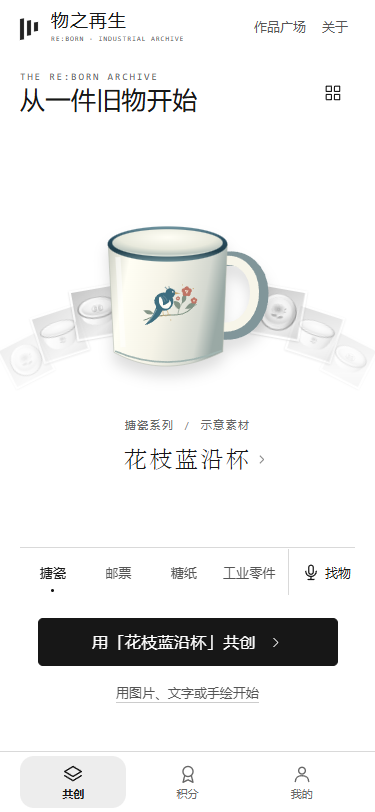
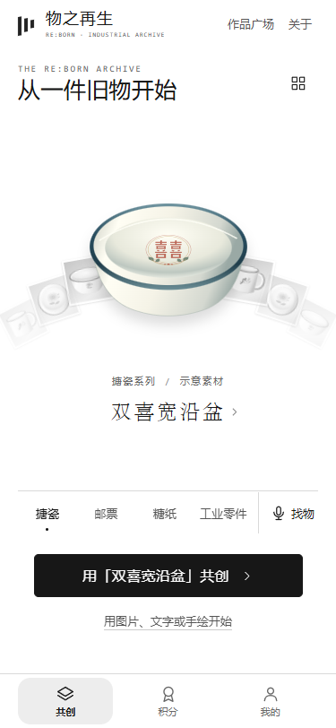

2026-10-30。沿用第01轮原生 H5、数据模型、存储和三个底栏。只修改首页与浏览，不开发 AI 工作台，不发布。
当前四张均是项目代码绘制的内嵌 SVG 示意，不是真实摄影、不是真实馆藏、不是器物 3D。首页和详情明确显示「示意素材 · 非真实馆藏」。原有项目没有已授权摄影记录，本轮没有以搜索到的无授权图片替代馆藏。
| 器物 | 示意ID | 待补摄影 |
|---|---|---|
| 花枝蓝沿杯 | enamel-cup-01 | 30–45°杯身/把手、杯口、底标、花鸟纹样 |
| 牡丹浅口盘 | enamel-plate-01 | 全貌俯视、蓝沿、牡丹、底标 |
| 花间深口碗 | enamel-bowl-01 | 斜俯视、内外壁、口沿、底标 |
| 双喜宽沿盆 | enamel-basin-01 | 斜俯视、宽沿、盆内纹样、底标 |
每件还需原片、透明 WebP 抠图、摄影者、实物来源、可用范围/许可凭据，以及经确认的年代/厂家/馆藏编号。未核实字段当前为空，不编造。当前内嵌 SVG 不依赖图片下载，因此没有假加载动画；接入摄影时需补图片下载失败/重试。
这是真实浏览器引擎的移动视口与触摸模拟测试，不等于实体手机测试。Safari、微信 WebView 尚未验证。上一轮 CUA 工具故障仍未修复，本轮使用可用的本地 Edge 测试；没有把上一轮截图当本轮证据。


新增 prototype/explore.js（四器物目录与关键词搜索）、explore-home.js（器物绘制、首页/详情/抽屉、动效）、explore.css（窄屏版式）。修改 prototype/app.js（选择/滑动/返回/搜索/原编辑衔接）、prototype/index.html（模块与样式加载）。新增 tests/explore.test.cjs、scripts/qa-round02.cjs；更新根 index.html 和中文单文件构建产物。新增本轮截图、测试输出和报告；README/使用说明与规划记录更新。
在项目目录执行 $env:PORT='8879' 后 npm start。访问 本机8879原型。为恢复旧数据保持原浏览器与端口。浏览器复测脚本使用 Playwright 和本机 Edge；通过 PLAYWRIGHT_MODULE 环境变量指定现有 Playwright 模块路径，不增加运行时依赖。
待接入：授权摄影与正式馆藏、AI、器型模型、云端公开、馆方积分、工厂授权。当前画面仍有示意绘图与实物摄影的材质差距，需要授权实拍才能完成真实搪瓷展示的最终素材验收。第02轮到此停止，不进入下一轮，不推送 GitHub。